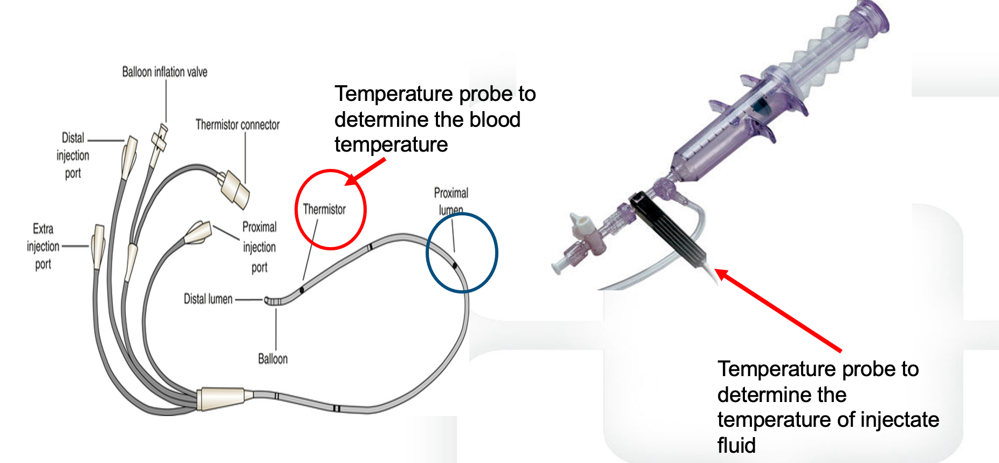

Module N7
The pulmonary artery catheter
Everything up to now has been about reading the circulation from the outside, with your eyes, your hands, and a bedside echo. That is enough for most patients. But some arrive undifferentiated, with shock that will not declare itself, or with a right heart and lungs so abnormal that the surface signs mislead. For them the pulmonary artery catheter, the Swan-Ganz, does something no bedside tool can: it sits inside the circulation and reports the pressures and flows directly. This page is the map. It covers what the catheter is, when it earns the risk of putting one in, and the four topics you will master on the simulation day, each a short knowledge check followed by a hands-on checkpoint on the simulator.
What it measures that nothing else can
The PAC is a flow-directed, balloon-tipped catheter, roughly 110 cm long and 7-Fr, advanced from a central vein through the right heart and out into a pulmonary artery. It is a quadruple-lumen device: a distal (yellow) lumen opens at the very tip in the pulmonary artery, a proximal (blue) lumen sits about 30 cm back in the right atrium, a temperature-sensing thermistor lies 4 cm from the tip, and a small balloon at the tip inflates with no more than 1.5 cc of air. Once it is in place it delivers three kinds of information the bedside cannot assemble all at once.

None of these numbers means anything without a reference range, and even the ranges are only a starting point, because shock is defined relative to a patient's own needs. A chronically low output that one failing heart has adapted to would be frank cardiogenic shock in another.
| Parameter | Normal range |
|---|---|
| Right atrial pressure (CVP) | 2 - 6 mmHg |
| Pulmonary artery pressure | 15 - 25 / 8 - 15 mmHg (mean 10 - 20) |
| Pulmonary artery occlusion (wedge) | 6 - 18 mmHg |
| Cardiac index | 2.5 - 4 L/min/m² |
| Systemic vascular resistance | 800 - 1200 dyne·s/cm&sup5; |
| Pulmonary vascular resistance | <250 dyne·s/cm&sup5; |
When it earns its risk
There is no single hard indication for a PAC. It earns its place in undifferentiated, multifactorial shock, especially when the echo windows are poor and the diagnosis will not resolve; in right heart failure and pulmonary hypertension, where it both characterizes the lesion and follows the response to therapy; after cardiothoracic surgery; and in separating cardiogenic from non-cardiogenic pulmonary edema. That utility has to be weighed honestly against the evidence. Randomized trials have not shown a benefit from PAC use, early data suggested harm, and the PAC-Man trial found no change in in-hospital mortality, which is usually read as: it can be used safely, but the catheter itself does not improve outcomes. It provides static filling pressures that do not predict fluid responsiveness, and its readings are only valid when the tip lies in a West zone III segment of lung. With echocardiography now everywhere and fewer clinicians practiced at insertion, the bar for reaching for one is deliberately high.
The contraindications cluster around the right heart itself: a prosthetic or infected tricuspid or pulmonic valve, a right atrial or ventricular mass or clot, and active endocarditis. An existing left bundle branch block is its own caution, because floating the catheter commonly provokes a transient right bundle branch block and can therefore tip such a patient into complete heart block. The complication that governs your technique is pulmonary artery rupture: only about 0.2% of placements, but roughly 30% mortality when it occurs.
Reading it: the four-chamber walk
As the balloon carries the catheter forward, the distal port's waveform is your guide, and it changes character in each chamber. It is low and gently undulating in the right atrium, becomes tall and pulsatile with a low diastolic dip in the right ventricle, gains a dicrotic notch and a higher diastolic step-up in the pulmonary artery, and finally collapses into a small, atrial-looking tracing when the balloon occludes a branch and wedges. Depth and waveform must agree at every step; when they do not, the catheter is coiling or misplaced.

The wedge is the whole reason for the balloon. With forward flow briefly stopped, the tip reads back through a static column of blood to the left atrium, standing in for left atrial pressure and, at end-diastole, for left ventricular filling, the one left-heart pressure a right-heart catheter can reach. Every pressure is read at end-expiration, when intrathoracic pressure is closest to zero. Flow comes from thermodilution, a cold bolus injected into the right atrium and the temperature curve it makes at the thermistor, or from the Fick principle.
Four topics, one path
The rest of N7 breaks the catheter into the same four topics you will be signed off on at the simulator, and each has its own short page here.
Topic 1 - Indications, anatomy, and setup. When the catheter actually helps and when it does not, the hardware itself, and the setup that makes every later number trustworthy: zeroing the transducer to atmosphere, leveling it to the phlebostatic axis at the fourth intercostal space in the mid-axillary line, and driving the monitor so the pressure scale and sweep speed let you see the respiratory swing.
Topic 2 - Insertion and troubleshooting. Check the balloon, orient the J-loop, inflate once past 20 cm, and advance in steps, reading depth and waveform together, right atrium to right ventricle to pulmonary artery to wedge. Just as important is recognizing the overwedged or damped tracing and knowing that two failed blind attempts is the signal to escalate to fluoroscopy.
Topic 3 - Waveforms and wedging. Reading the right atrial a, c, and v waves and their descents, the right ventricular and pulmonary artery tracings, and the wedge itself, measuring at the a-wave peak at end-expiration, plus the traps that make the wedge lie: the wrong lung zone, PEEP, and the large v waves of mitral regurgitation.
Topic 4 - Cardiac output measurement. Thermodilution done correctly, triplicate injections averaged with outliers discarded, and the handful of things that corrupt it, from injectate volume and temperature to tricuspid regurgitation and shunt. Then the Fick method, and the situations where mixed venous saturation and Fick are the more honest answer.
Work through the four topics in order below; each is a short page here and a mastery checkpoint on the simulation day, starting with indications, anatomy, and setup.
References
- PA Catheter Education course, hemosim.org - Modules 1 through 8 (course overview, objectives, and structure).
- PAC Modules (Patrick Lindsay) teaching deck - indications and contraindications, catheter anatomy, insertion sequence, RA/RV/PA/wedge waveforms, thermodilution and Fick.
- HemoSim PAC Topic 1-4 question banks and PAC Simulation Mastery Checklist (student handout).
- PAC-Man trial, cited within the course for the safety and absence of a mortality benefit of pulmonary artery catheterization.